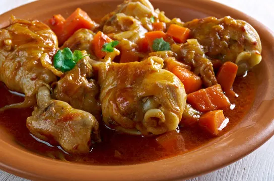

Chicken Stew
⏱ 40 mins
🍽 Serves 2
💰 Ksh 250 - 500 Medium Budget

Ingredients
- 1/2- 1 Full Chicken(Cut into pieces)
- 1tbsp Vegetable Oil
- 1 large onion(Chopped)
- 1/2-1 tsp ginger (grated)
- 2-3 grated cloves of garlic
- 1 fresh green/red chili(optional)
- 4 tomatoes (washed and chopped)
- 1 large capsicums (chopped)
- 2 tbsp curry powder
- 1 chicken cube(optional)
- salt(use sparingly if using a chicken cube)
- 1 1/2 cups of water
- handful of dhania
Instructions
- In a large sufuria (sauce pan) heat oil, and fry onions until soft.
- Add the ginger,garlic, chili and fry until aromatic.
- Add the curry powder and chicken cube and fry briefly about 15-30secs.
- Add the tomatoes fry, cover with a lid and cook for 5 minutes or until tomatoes are soft.
- Add the chicken pieces, stir well and fry for about two minutes.
- Add the water, bring to a boil, cover and simmer for 10 minutes.
- Add the capsicums, stir well, check the consistency and taste of stew simmer for 5 minutes.
- lastly add the dhania, stir well.
- Serve and enjoy with rice,chapati,ugali.